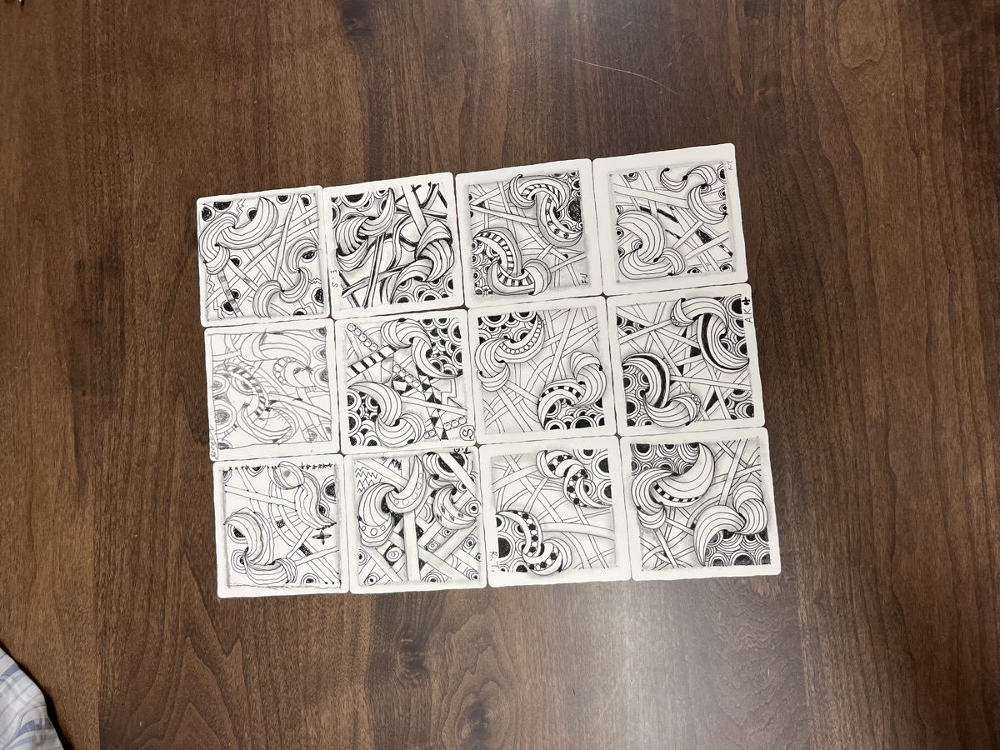
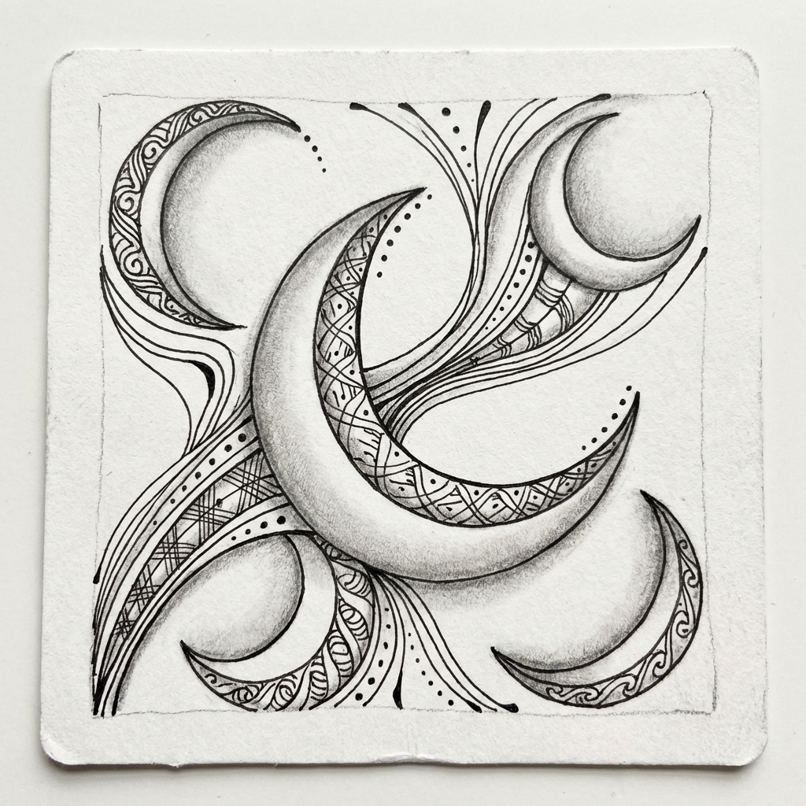

眠れない夜の処方箋。不眠症に効くゼンタングル
夜眠れない、寝つきが悪い……そんな不眠の悩みにゼンタングルが効く理由をCZT認定講師が解説。就寝前15分の「描く瞑想」が睡眠の質を改善するメカニズムとおすすめパターンをご紹介。
続きを読む →15分の静寂が、日常を豊かにする。
夜眠れない、寝つきが悪い……そんな不眠の悩みにゼンタングルが効く理由をCZT認定講師が解説。就寝前15分の「描く瞑想」が睡眠の質を改善するメカニズムとおすすめパターンをご紹介。
続きを読む →
ゼンタングルの核となる「タングル（模様・パターン）」とは何か？5つの基本要素、200種以上の分類、初心者おすすめパターン、活用法までCZT認定講師が徹底解説します。
続きを読む →育児で疲れた心をリセット。寝かしつけ後のたった15分で、自分を取り戻す時間に。罪悪感なく楽しめる、ママのためのゼンタングル活用法。
続きを読む →印刷年賀状にプラスワン。ゼンタングルで描く和風の模様で、あなただけのオリジナル年賀状に。干支モチーフ、伝統文様との組み合わせを解説。
続きを読む →絵が苦手でも大丈夫。ゼンタングルで描く、おしゃれで簡単なクリスマスカードの作り方。雪の結晶、モミの木、冬のボーダーなど、すぐに真似できるアイデア満載。
続きを読む →趣味が続かない、いつも挫折してしまう…そんな悩みを解決。ゼンタングルが続けやすい5つの理由を、心理学的視点とCZT認定講師の経験から解説します。
続きを読む →手帳の余白、ノートの表紙を自分だけのデザインに。ゼンタングルを使った簡単でおしゃれな装飾アイデアをご紹介。バレットジャーナルとの相性も抜群です。
続きを読む →「絵心がない」「美術は苦手だった」という方こそ、ゼンタングルを。絵を描くのではなく、パターンを繰り返すアート。上手い・下手がない理由を解説します。
続きを読む →新しい趣味を探している大人の方へ。ゼンタングルは一人で、家で、今日から始められるアート。絵が苦手でも、50代・60代からでも楽しめる理由を解説します。
続きを読む →
ゼンタングルで最初に習う「基本中の基本」クレセントムーンの描き方をCZT認定講師が徹底解説。三日月の形（レディバグ）とオーラ技法のコツをご紹介します。
続きを読む →日々の忙しさの中で、心が置いてけぼりになっていませんか？「描く瞑想」とも呼ばれるゼンタングルが、なぜ現代人のストレス解消にこれほどまでに効果的なのか。公式メソッドの視点から解説します。
続きを読む →会議続きで疲れた脳、午後の眠気、アイデアの煮詰まり——。15分のゼンタングルが、ビジネスパーソンの集中力とパフォーマンスをどう変えるのか。公式メソッドと脳科学の視点から解説します。
続きを読む →ゼンタングルの基本から道具の選び方、8つのステップ、最初に描くべきパターンまで、CZT認定講師が徹底解説。「ゼンタングルとは何か」を知りたい方必見の完全ガイドです。
続きを読む →Pigma Micronペンの選び方、公式タイル vs 代用品、シェーディング用鉛筆まで、必要な道具を徹底解説。予算別のおすすめセットもご紹介します。
続きを読む →Crescent Moon、Hollibaugh、Florzなど、人気パターンTOP10をCZT認定講師が厳選。描き方のコツと組み合わせ例もご紹介します。
続きを読む →マインドフルネス効果、集中力向上、ストレス軽減など、瞑想とゼンタングルの共通点と違いを比較。あなたに合うのはどっち？診断付き。
続きを読む →鉛筆の選び方、グラデーションの作り方、立体感を出すコツまで、初心者から中級者向けに詳しくご紹介。よくある失敗と対処法も。
続きを読む →2004年の誕生から世界への広がり、日本上陸まで。リック・ロバーツとマリア・トーマスの出会い、名前の由来、CZT制度の開始など、ゼンタングルのストーリーを詳しく解説。
続きを読む →